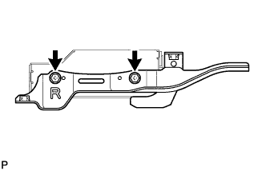

ЭБУ СИСТЕМЫ НАВИГАЦИИ > СНЯТИЕ |
| 1. ОТСОЕДИНИТЕ ПРОВОД ОТ ОТРИЦАТЕЛЬНОГО ВЫВОДА АККУМУЛЯТОРНОЙ БАТАРЕИ |
| 2. СНИМИТЕ ЛЕВОЕ ПЕРЕДНЕЕ СИДЕНЬЕ В СБОРЕ |
Для сиденья с ручным приводом:
Снимите левое переднее сиденье (Нажмите здесь).
Для сиденья с электроприводом:
Снимите левое переднее сиденье (Нажмите здесь).
Для сидений с функцией облегчения посадки "Walk In":
Снимите левое переднее сиденье (Нажмите здесь).
| 3. СНИМИТЕ ПАНЕЛЬ МОДУЛЯ СИСТЕМЫ НАВИГАЦИИ С ДЕРЖАТЕЛЕМ |
Отсоедините крепление и отогните напольные коврики в направлениях, указанных стрелками.
Выверните болт и 2 винта.
Отсоедините разъемы и снимите панель модуля системы навигации с кронштейном проигрывателя дисков.
| 4. СНИМИТЕ КРЫШКУ ПРОИГРЫВАТЕЛЯ КОМПАКТ-ДИСКОВ |
Выверните 3 винта и снимите крышку проигрывателя дисков.
| 5. СНИМИТЕ ДЕРЖАТЕЛЬ ПРОИГРЫВАТЕЛЯ ДИСКОВ |
Выверните 2 винта и снимите кронштейн проигрывателя дисков.
| 6. СНИМИТЕ ДЕРЖАТЕЛЬ № 2 ПРОИГРЫВАТЕЛЯ КОМПАКТ-ДИСКОВ |
|  |
Выверните 2 винта и снимите кронштейн проигрывателя дисков № 2.